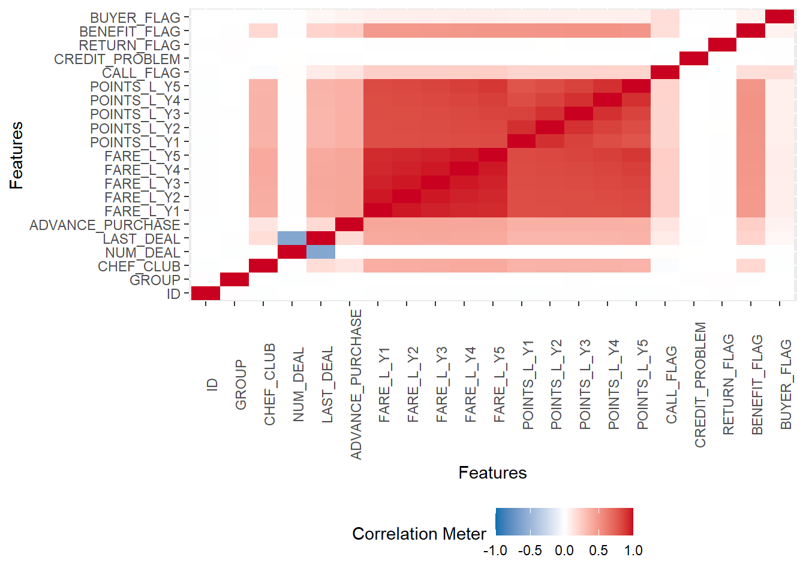
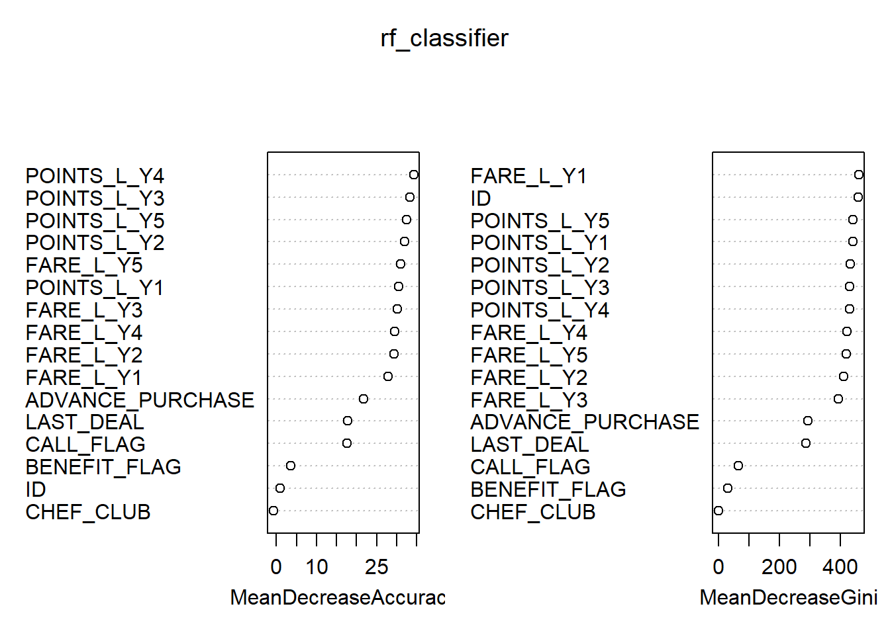

This is an R Markdown based document for presenting the project results. The main target of the project is to build a predictive model.
library(tidyverse)## -- Attaching packages --------------------------------------- tidyverse 1.3.0 --## <U+221A> ggplot2 3.3.0 <U+221A> purrr 0.3.3
## <U+221A> tibble 3.0.0 <U+221A> dplyr 0.8.5
## <U+221A> tidyr 1.0.2 <U+221A> stringr 1.4.0
## <U+221A> readr 1.3.1 <U+221A> forcats 0.5.0## -- Conflicts ------------------------------------------ tidyverse_conflicts() --
## x dplyr::filter() masks stats::filter()
## x dplyr::lag() masks stats::lag()library(descriptr)
library(knitr)
library(ggplot2)
library(mice)##
## Attaching package: 'mice'## The following objects are masked from 'package:base':
##
## cbind, rbindlibrary(lattice)
library(reshape2)##
## Attaching package: 'reshape2'## The following object is masked from 'package:tidyr':
##
## smithslibrary(DataExplorer)ffp <- read.csv("ffp_train.csv")Look for NA and missing values:
ds_screener(ffp)## -----------------------------------------------------------------------
## | Column Name | Data Type | Levels | Missing | Missing (%) |
## -----------------------------------------------------------------------
## | ID | integer | NA | 0 | 0 |
## | GROUP | integer | NA | 0 | 0 |
## | CHEF_CLUB | integer | NA | 0 | 0 |
## | NUM_DEAL | integer | NA | 0 | 0 |
## | LAST_DEAL | numeric | NA | 0 | 0 |
## |ADVANCE_PURCHASE| integer | NA | 0 | 0 |
## | FARE_L_Y1 | numeric | NA | 0 | 0 |
## | FARE_L_Y2 | numeric | NA | 0 | 0 |
## | FARE_L_Y3 | numeric | NA | 0 | 0 |
## | FARE_L_Y4 | numeric | NA | 0 | 0 |
## | FARE_L_Y5 | numeric | NA | 0 | 0 |
## | POINTS_L_Y1 | numeric | NA | 0 | 0 |
## | POINTS_L_Y2 | numeric | NA | 0 | 0 |
## | POINTS_L_Y3 | numeric | NA | 0 | 0 |
## | POINTS_L_Y4 | numeric | NA | 0 | 0 |
## | POINTS_L_Y5 | numeric | NA | 0 | 0 |
## | CALL_FLAG | integer | NA | 0 | 0 |
## | CREDIT_PROBLEM | integer | NA | 0 | 0 |
## | RETURN_FLAG | integer | NA | 0 | 0 |
## | BENEFIT_FLAG | integer | NA | 0 | 0 |
## | BUYER_FLAG | integer | NA | 0 | 0 |
## -----------------------------------------------------------------------
##
## Overall Missing Values 0
## Percentage of Missing Values 0 %
## Rows with Missing Values 0
## Columns With Missing Values 0Summary statistics:
summary(ffp)## ID GROUP CHEF_CLUB NUM_DEAL LAST_DEAL ADVANCE_PURCHASE FARE_L_Y1
## Min. : 1 Min. :1.000 Min. :0.000000 Min. : 0.000 Min. : 0.00 Min. : 6.00 Min. : 0.0
## 1st Qu.:11251 1st Qu.:2.000 1st Qu.:0.000000 1st Qu.: 3.000 1st Qu.: 26.70 1st Qu.:17.00 1st Qu.:115.0
## Median :22501 Median :3.000 Median :0.000000 Median : 4.000 Median : 40.00 Median :20.00 Median :140.0
## Mean :22501 Mean :3.001 Mean :0.008867 Mean : 3.996 Mean : 49.93 Mean :20.68 Mean :150.2
## 3rd Qu.:33750 3rd Qu.:4.000 3rd Qu.:0.000000 3rd Qu.: 5.000 3rd Qu.: 60.00 3rd Qu.:24.00 3rd Qu.:170.8
## Max. :45000 Max. :5.000 Max. :1.000000 Max. :14.000 Max. :493.30 Max. :42.00 Max. :518.3
## FARE_L_Y2 FARE_L_Y3 FARE_L_Y4 FARE_L_Y5 POINTS_L_Y1 POINTS_L_Y2 POINTS_L_Y3
## Min. : 0.0 Min. : 0.0 Min. : 0.0 Min. : 0.0 Min. : 0.0 Min. : 0.0 Min. : 0.0
## 1st Qu.:115.0 1st Qu.:115.0 1st Qu.:115.0 1st Qu.:115.0 1st Qu.:111.5 1st Qu.:111.5 1st Qu.:111.5
## Median :140.0 Median :140.0 Median :140.0 Median :140.0 Median :140.7 Median :140.8 Median :140.8
## Mean :150.2 Mean :150.3 Mean :150.2 Mean :150.1 Mean :149.6 Mean :149.6 Mean :149.6
## 3rd Qu.:170.8 3rd Qu.:170.8 3rd Qu.:170.8 3rd Qu.:170.8 3rd Qu.:176.5 3rd Qu.:176.6 3rd Qu.:176.6
## Max. :524.2 Max. :495.8 Max. :494.2 Max. :515.8 Max. :462.2 Max. :476.2 Max. :467.5
## POINTS_L_Y4 POINTS_L_Y5 CALL_FLAG CREDIT_PROBLEM RETURN_FLAG BENEFIT_FLAG BUYER_FLAG
## Min. : 0.0 Min. : 0.0 Min. :0.00000 Min. :0.00000 Min. :0.000000 Min. :0.0000 Min. :0.00000
## 1st Qu.:111.7 1st Qu.:111.4 1st Qu.:0.00000 1st Qu.:0.00000 1st Qu.:0.000000 1st Qu.:0.0000 1st Qu.:0.00000
## Median :140.8 Median :140.7 Median :0.00000 Median :0.00000 Median :0.000000 Median :0.0000 Median :0.00000
## Mean :149.6 Mean :149.6 Mean :0.05031 Mean :0.09751 Mean :0.007667 Mean :0.1274 Mean :0.09358
## 3rd Qu.:176.8 3rd Qu.:176.7 3rd Qu.:0.00000 3rd Qu.:0.00000 3rd Qu.:0.000000 3rd Qu.:0.0000 3rd Qu.:0.00000
## Max. :501.9 Max. :498.6 Max. :1.00000 Max. :1.00000 Max. :1.000000 Max. :1.0000 Max. :1.00000Database dimensions:
dim(ffp)## [1] 45000 21ffp$CALL_FLAG <- as.factor(ffp$CALL_FLAG)
ffp$CREDIT_PROBLEM <- as.factor(ffp$CREDIT_PROBLEM)
ffp$GROUP <- as.factor(ffp$GROUP)
ffp$CHEF_CLUB <- as.factor(ffp$CHEF_CLUB)
ffp$NUM_DEAL <- as.factor(ffp$NUM_DEAL)
ffp$CALL_FLAG <- as.factor(ffp$CALL_FLAG)
ffp$CREDIT_PROBLEM <- as.factor(ffp$CREDIT_PROBLEM)
ffp$RETURN_FLAG <- as.factor(ffp$RETURN_FLAG)
ffp$BENEFIT_FLAG <- as.factor(ffp$BENEFIT_FLAG)
ffp$BUYER_FLAG <- as.factor(ffp$BUYER_FLAG)ds_freq_table(ffp, LAST_DEAL, 4) # 94.4% of costumers last deal price was under 123$ ## Variable: LAST_DEAL
## |-----------------------------------------------------------------------------|
## | Bins | Frequency | Cum Frequency | Percent | Cum Percent |
## |-----------------------------------------------------------------------------|
## | 0 - 123.3 | 42514 | 42514 | 94.48 | 94.48 |
## |-----------------------------------------------------------------------------|
## | 123.3 - 246.7 | 2271 | 44785 | 5.05 | 99.52 |
## |-----------------------------------------------------------------------------|
## | 246.7 - 370 | 201 | 44986 | 0.45 | 99.97 |
## |-----------------------------------------------------------------------------|
## | 370 - 493.3 | 14 | 45000 | 0.03 | 100 |
## |-----------------------------------------------------------------------------|
## | Total | 45000 | - | 100.00 | - |
## |-----------------------------------------------------------------------------|ds_freq_table(ffp, ADVANCE_PURCHASE, 4) # 71% between 15-24 days between purchases ## Variable: ADVANCE_PURCHASE
## |-------------------------------------------------------------------|
## | Bins | Frequency | Cum Frequency | Percent | Cum Percent |
## |-------------------------------------------------------------------|
## | 6 - 15 | 5888 | 5888 | 13.08 | 13.08 |
## |-------------------------------------------------------------------|
## | 15 - 24 | 32037 | 37925 | 71.19 | 84.28 |
## |-------------------------------------------------------------------|
## | 24 - 33 | 11596 | 49521 | 25.77 | 110.05 |
## |-------------------------------------------------------------------|
## | 33 - 42 | 420 | 49941 | 0.93 | 110.98 |
## |-------------------------------------------------------------------|
## | Total | 45000 | - | 100.00 | - |
## |-------------------------------------------------------------------|mean(ffp$ADVANCE_PURCHASE) # 20.6 days in average ## [1] 20.67869table(ffp$BUYER_FLAG) # Only 4211 did buy the full product ##
## 0 1
## 40789 4211ffp[, 1:21] <- sapply(ffp[, 1:21], as.character)
ffp[, 1:21] <- sapply(ffp[, 1:21], as.numeric)plot_correlation(ffp, maxcat = 5L) # Consider removing Group, NUM_DEAL, CREDIT_PROBLEM, RETURN_FLAG - week correlation with BUYER FLAG
ffp_index <- sort(sample(nrow(ffp), nrow(ffp)*.7)) train <- ffp[ffp_index,]test <- ffp[-ffp_index,]log.model <- glm(BUYER_FLAG ~., data = train, family = binomial(link = "logit"))summary(log.model) # CHEF_CLUB, ADVANCE_PURCHACE, CALL_FLAG and BENEFIT_FLAG are significant variables ##
## Call:
## glm(formula = BUYER_FLAG ~ ., family = binomial(link = "logit"),
## data = train)
##
## Deviance Residuals:
## Min 1Q Median 3Q Max
## -1.0700 -0.4310 -0.4031 -0.3824 2.4751
##
## Coefficients:
## Estimate Std. Error z value Pr(>|z|)
## (Intercept) -3.229e+00 1.242e-01 -25.991 < 2e-16 ***
## ID 2.524e-07 1.503e-06 0.168 0.866686
## GROUP -4.375e-03 1.382e-02 -0.317 0.751553
## CHEF_CLUB -1.036e+00 2.557e-01 -4.054 5.04e-05 ***
## NUM_DEAL 2.079e-02 1.313e-02 1.584 0.113217
## LAST_DEAL 1.103e-03 6.826e-04 1.616 0.106127
## ADVANCE_PURCHASE 1.525e-02 4.610e-03 3.307 0.000944 ***
## FARE_L_Y1 1.989e-03 1.701e-03 1.169 0.242315
## FARE_L_Y2 2.435e-04 2.171e-03 0.112 0.910699
## FARE_L_Y3 -4.410e-03 2.178e-03 -2.025 0.042905 *
## FARE_L_Y4 5.681e-03 2.178e-03 2.608 0.009095 **
## FARE_L_Y5 4.972e-05 1.903e-03 0.026 0.979162
## POINTS_L_Y1 -2.977e-04 9.073e-04 -0.328 0.742837
## POINTS_L_Y2 4.334e-04 1.131e-03 0.383 0.701591
## POINTS_L_Y3 -3.466e-04 1.115e-03 -0.311 0.755974
## POINTS_L_Y4 2.823e-04 1.122e-03 0.252 0.801363
## POINTS_L_Y5 -1.086e-03 1.001e-03 -1.085 0.277817
## CALL_FLAG 1.317e+00 6.254e-02 21.064 < 2e-16 ***
## CREDIT_PROBLEM -4.784e-02 6.682e-02 -0.716 0.473968
## RETURN_FLAG -1.666e-02 2.267e-01 -0.074 0.941398
## BENEFIT_FLAG 1.690e-01 6.088e-02 2.775 0.005516 **
## ---
## Signif. codes: 0 '***' 0.001 '**' 0.01 '*' 0.05 '.' 0.1 ' ' 1
##
## (Dispersion parameter for binomial family taken to be 1)
##
## Null deviance: 19750 on 31498 degrees of freedom
## Residual deviance: 19066 on 31478 degrees of freedom
## AIC: 19108
##
## Number of Fisher Scoring iterations: 5log.predictions <- predict(log.model, test, type="response")head(log.predictions, 10)## 4 6 7 8 10 11 13 17 19 20
## 0.07109688 0.08491578 0.07206675 0.07316841 0.10679302 0.06514456 0.14403890 0.07503545 0.08339935 0.12117595log.prediction.rd <- ifelse(log.predictions > 0.2, 1, 0) # Different cutoffs gives different accuracy measure table(log.prediction.rd, test[,21])##
## log.prediction.rd 0 1
## 0 11762 1034
## 1 514 191accuracy <- table(log.prediction.rd, test[,21])
sum(diag(accuracy))/sum(accuracy) # Accuracy = 88%## [1] 0.8853418If we use the log.prediction with 10% cutoff, we would get: 297383 - (1908+383)48 = 113,751-109,968 = 3783$ If we use the log.prediction with 20% cutoff, we would get: 198297 - (491+198)48 = 58,806-33,072 = 25,734$ More then 20% cutoff will not produce better results
train__new <- select(train, -one_of('GROUP', "NUM_DEAL", "CREDIT_PROBLEM", "RETURN_FLAG"))
test__new <- select(test, -one_of('GROUP', "NUM_DEAL", "CREDIT_PROBLEM", "RETURN_FLAG"))log.model <- glm(BUYER_FLAG ~., data = train__new, family = binomial(link = "logit"))
summary(log.model) # CHEF_CLUB, ADVANCE_PURCHACE, CALL_FLAG and BENEFIT_FLAG are significant variables ##
## Call:
## glm(formula = BUYER_FLAG ~ ., family = binomial(link = "logit"),
## data = train__new)
##
## Deviance Residuals:
## Min 1Q Median 3Q Max
## -1.0629 -0.4306 -0.4030 -0.3831 2.4815
##
## Coefficients:
## Estimate Std. Error z value Pr(>|z|)
## (Intercept) -3.164e+00 1.046e-01 -30.253 < 2e-16 ***
## ID 2.722e-07 1.503e-06 0.181 0.856263
## CHEF_CLUB -1.037e+00 2.557e-01 -4.056 5e-05 ***
## LAST_DEAL 3.772e-04 5.086e-04 0.742 0.458279
## ADVANCE_PURCHASE 1.525e-02 4.610e-03 3.307 0.000942 ***
## FARE_L_Y1 2.027e-03 1.700e-03 1.192 0.233158
## FARE_L_Y2 3.098e-04 2.169e-03 0.143 0.886455
## FARE_L_Y3 -4.353e-03 2.176e-03 -2.000 0.045467 *
## FARE_L_Y4 5.711e-03 2.176e-03 2.624 0.008692 **
## FARE_L_Y5 1.047e-04 1.903e-03 0.055 0.956123
## POINTS_L_Y1 -3.113e-04 9.071e-04 -0.343 0.731455
## POINTS_L_Y2 4.442e-04 1.131e-03 0.393 0.694479
## POINTS_L_Y3 -3.453e-04 1.115e-03 -0.310 0.756814
## POINTS_L_Y4 2.737e-04 1.122e-03 0.244 0.807305
## POINTS_L_Y5 -1.079e-03 1.001e-03 -1.078 0.280991
## CALL_FLAG 1.318e+00 6.253e-02 21.083 < 2e-16 ***
## BENEFIT_FLAG 1.690e-01 6.088e-02 2.776 0.005500 **
## ---
## Signif. codes: 0 '***' 0.001 '**' 0.01 '*' 0.05 '.' 0.1 ' ' 1
##
## (Dispersion parameter for binomial family taken to be 1)
##
## Null deviance: 19750 on 31498 degrees of freedom
## Residual deviance: 19069 on 31482 degrees of freedom
## AIC: 19103
##
## Number of Fisher Scoring iterations: 5log.predictions <- predict(log.model, test__new, type="response")head(log.predictions, 10)## 4 6 7 8 10 11 13 17 19 20
## 0.06889731 0.08234937 0.06818434 0.07616351 0.10696622 0.06651044 0.14407917 0.08387526 0.07770839 0.12231423log.prediction.rd <- ifelse(log.predictions > 0.2, 1, 0) # Different cutoffs gives different accuracy measure table(log.prediction.rd, test__new[,17])##
## log.prediction.rd 0 1
## 0 11762 1034
## 1 514 191accuracy <- table(log.prediction.rd, test__new[,17])
sum(diag(accuracy))/sum(accuracy) # Accuracy = 88%## [1] 0.8853418install.packages("randomForest")## Installing package into 'C:/Users/user/Documents/R/win-library/3.6'
## (as 'lib' is unspecified)library(randomForest)## randomForest 4.6-14## Type rfNews() to see new features/changes/bug fixes.##
## Attaching package: 'randomForest'## The following object is masked from 'package:dplyr':
##
## combine## The following object is masked from 'package:ggplot2':
##
## marginffp$GROUP <- as.factor(ffp$GROUP)
ffp$CHEF_CLUB <- as.factor(ffp$CHEF_CLUB)
ffp$NUM_DEAL <- as.factor(ffp$NUM_DEAL)
ffp$CALL_FLAG <- as.factor(ffp$CALL_FLAG)
ffp$CREDIT_PROBLEM <- as.factor(ffp$CREDIT_PROBLEM)
ffp$RETURN_FLAG <- as.factor(ffp$RETURN_FLAG)
ffp$BENEFIT_FLAG <- as.factor(ffp$BENEFIT_FLAG)
ffp$BUYER_FLAG <- as.factor(ffp$BUYER_FLAG)Convert response to factor before running random forest
ffp$BUYER_FLAG <- as.factor(ffp$BUYER_FLAG)
train$BUYER_FLAG <- as.factor(train$BUYER_FLAG)
train__new$BUYER_FLAG <- as.factor(train__new$BUYER_FLAG)rf_classifier = randomForest(train__new$BUYER_FLAG ~ ., data=train__new, ntree=300, mtry=4, importance=TRUE)
rf_classifier##
## Call:
## randomForest(formula = train__new$BUYER_FLAG ~ ., data = train__new, ntree = 300, mtry = 4, importance = TRUE)
## Type of random forest: classification
## Number of trees: 300
## No. of variables tried at each split: 4
##
## OOB estimate of error rate: 9.66%
## Confusion matrix:
## 0 1 class.error
## 0 28401 112 0.003928033
## 1 2930 56 0.981245814varImpPlot(rf_classifier)
Validation set confusion matrix
prediction_for_table <- predict(rf_classifier,newdata = test__new[,-17])
table(observed=test__new[,17],predicted=prediction_for_table)## predicted
## observed 0 1
## 0 12241 35
## 1 1197 2889.5 % correctly classified by the rf model. Business wise it means that by using this model only 23 will actually buy and 1220 will not
500 trees
rf_classifier = randomForest(train__new$BUYER_FLAG ~ ., data=train__new, ntree=500, mtry=4, importance=TRUE)
rf_classifier ##
## Call:
## randomForest(formula = train__new$BUYER_FLAG ~ ., data = train__new, ntree = 500, mtry = 4, importance = TRUE)
## Type of random forest: classification
## Number of trees: 500
## No. of variables tried at each split: 4
##
## OOB estimate of error rate: 9.64%
## Confusion matrix:
## 0 1 class.error
## 0 28422 91 0.003191527
## 1 2945 41 0.986269257prediction_for_table <- predict(rf_classifier,test__new[,-17])
table(observed=test__new[,17],predicted=prediction_for_table) # Getting the same OOB error rate as for 300 trees ## predicted
## observed 0 1
## 0 12242 34
## 1 1199 26mtry = 6
rf_classifier = randomForest(train__new$BUYER_FLAG ~ ., data=train__new, ntree=500, mtry=6, importance=TRUE)
rf_classifier ##
## Call:
## randomForest(formula = train__new$BUYER_FLAG ~ ., data = train__new, ntree = 500, mtry = 6, importance = TRUE)
## Type of random forest: classification
## Number of trees: 500
## No. of variables tried at each split: 6
##
## OOB estimate of error rate: 9.76%
## Confusion matrix:
## 0 1 class.error
## 0 28373 140 0.004910041
## 1 2935 51 0.982920295prediction_for_table <- predict(rf_classifier,test__new[,-17])
table(observed=test__new[,17],predicted=prediction_for_table) # Using 6 for mtry increase the OBB error rate ## predicted
## observed 0 1
## 0 12230 46
## 1 1197 28table(train\(BUYER_FLAG) prop.table(table(train\)BUYER_FLAG)) summary(train)
library(ROSE) over <- ovun.sample(BUYER_FLAG~., data = train, method = “over”, N = 57148)\(data under <- ovun.sample(BUYER_FLAG~., data = train, method = "under", N = 5850)\)data both <- ovun.sample(BUYER_FLAG~., data=train, method = “both”, p = 0.5, seed = 222, N = 31499)\(data rose <- ROSE(BUYER_FLAG~., data = train, N = 500, seed=111)\)data
library(randomForest) rftrain <- randomForest(BUYER_FLAG~., data = train) rfover <- randomForest(BUYER_FLAG~., data = over) rfunder <- randomForest(BUYER_FLAG~., data = under) rfboth <- randomForest(BUYER_FLAG~., data = both) rfrose <- randomForest(BUYER_FLAG~., data=rose)
library(caret)
names <- c(2:4,17:20) test[,names] <- lapply(test[,names] , factor) str(test)
names <- c(2:4,17:20) train[,names] <- lapply(train[,names] , factor) str(train)
levels(test\(NUM_DEAL) <- levels(train\)NUM_DEAL)
confusionMatrix(predict(rftrain, test), test\(BUYER_FLAG, positive = '1') # profit = -744\) Sensitivity = 0.004 confusionMatrix(predict(rfunder, test), test\(BUYER_FLAG, positive = '1') # profit = 97,792\) Sensitivity = 0.57 confusionMatrix(predict(rfover, test), test\(BUYER_FLAG, positive = '1') # profit = 22,260\) Sensitivity = 0.077 confusionMatrix(predict(rfboth, test), test\(BUYER_FLAG, positive = '1') # profit = 89,889\) Sensitivity = 0.342 confusionMatrix(predict(rfrose, test), test$BUYER_FLAG, positive = ‘1’) # profit = 53,037 Sensitivity = 0.61